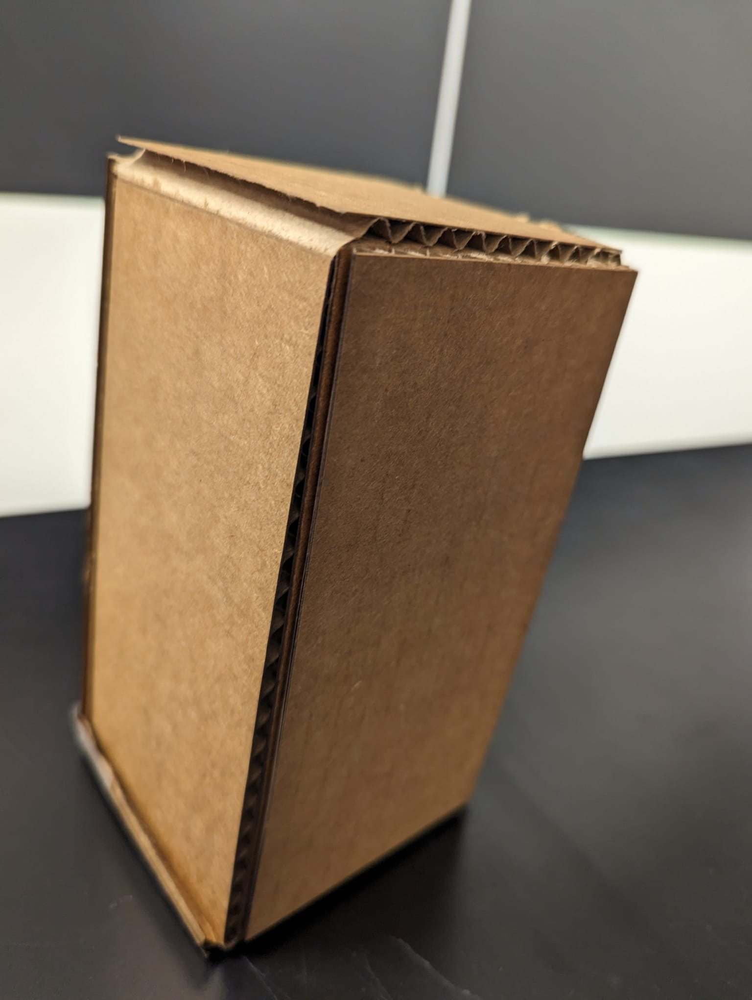
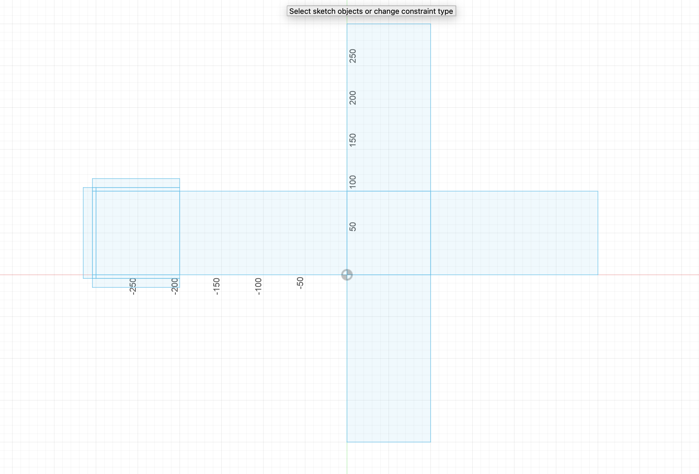

Introduction
Creating a surprise box with a laser cutter involves a fascinating process that merges craftsmanship with functionality. Knowing that maintaining a traditional box might be cumbersome, the aim is to engineer a delightful surprise. The laser cutter will precisely carve out the intricate patterns and designs necessary to transform a mere box into a playful, multi-functional marvel. By strategically designing the box to dismantle upon opening its lid, it becomes more than just a container; it evolves into a versatile storage solution. With compartments ingeniously integrated into its sides, it offers an easy and enjoyable way to both store and access equipment. Through this process, the laser cutter becomes a tool not just for fabrication, but for innovation and amusement.
The dimensions of the surprise box play a crucial role in its functionality and appeal. Careful consideration is given to ensure that the box is both practical and visually captivating. The size is meticulously determined to accommodate various items while maintaining a compact form factor. The dimensions are optimized to allow for easy handling and storage, whether on a desk, shelf, or in a backpack. Furthermore, the proportions are crafted to enhance the surprise element, with the lid concealing the true nature of the box until it is opened. Through precise measurements and thoughtful design, the surprise box becomes not only a storage solution but also a testament to the ingenuity of laser cutting technology.
Process
After ensuring the knife protrudes about 1 mm from the holder and replacing it, I depress the loading lever to elevate the rolling wheels and load vinyl from the rear, either as a sheet or roll, positioning it under the white tape and locking it in place by raising the loading lever. Pressing "menu" twice on the keypad, I select the material type and set it up accordingly, then use the keypad arrows to maneuver the cutting head to the desired location, setting the origin by holding down the origin key for approximately one second. In Inkscape, I open a new document with dimensions 22.99 inches width and 62.99 inches height, import a black and white image, and position it at the bottom left corner. After tracing the bitmap and adjusting properties, I print the image, ensuring the stroke width is set to 0.5 px, and send the file to the vinyl cutter by pressing Print. This meticulous process ensures precise cutting and optimal results for the surprise box design.
picture of the 3d model and the box


Fusion 360 objects
Choosing to create a Pokémon ball in Fusion 360 was a deliberate decision aimed at covering the major functionalities of the tools used in the tutorial: Revolve, Split Body, and Extrude. The Pokémon ball's iconic design provides ample opportunities to utilize these tools effectively. Despite the tutorial's concise duration of around 10 minutes, there were ample opportunities for personal customization and experimentation. By undertaking this project, I aimed to not only grasp the fundamental concepts demonstrated in the tutorial but also to push the boundaries of creativity by adding personal touches and modifications to the design. The Pokémon ball's recognizable shape and distinct features allowed for a fulfilling learning experience while simultaneously fostering a sense of creativity and exploration within the Fusion 360 environment
In creating the Pokémon ball in Fusion 360, the tools were utilized as follows:
1)Revolve: The Revolve tool was employed to generate the spherical shape of the Pokémon ball. By sketching a semi-circle profile and specifying a rotational axis, the tool revolved the sketch around the axis to form a solid sphere, capturing the characteristic roundness of the Pokémon ball.
2)Split Body: The Split Body tool was used to divide the spherical shape into distinct sections, replicating the appearance of the Pokémon ball's red top and white bottom halves. By creating a cutting plane, the tool split the body into separate entities, allowing for independent manipulation and customization of each section.
3)Extrude: The Extrude tool played a crucial role in adding depth and dimension to various elements of the Pokémon ball. It was utilized to extrude features such as the black band separating the top and bottom halves, as well as the button and central line details. By extruding selected sketch profiles along specified paths, intricate details were added to enhance the resemblance to the iconic Pokémon ball design.
Through the strategic application of these tools, the Pokémon ball was meticulously crafted in Fusion 360, showcasing the versatility and power of the software in translating conceptual designs into tangible 3D models.
Final output :